Menopause averted a midlife energetic crisis with help from older dependent children and parents: A simulation study
Washington State University
May 16, 2026
Menopause is rare
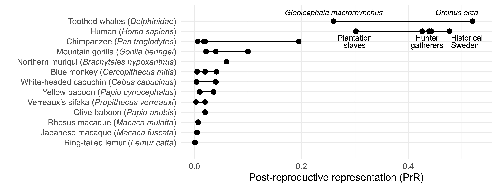
Wood et al. (2023)
Testing the “two sex” embodied capital model of menopause (Kaplan et al. 2010)
- Humans evolved to exploit a highly knowledge- and skill-based “niche” providing energy-rich but difficult to extract resources
- This niche required the rearing of slow-developing, large-brained, and thus energetically expensive offspring
- The energetic burden was met in long-term marriages with a sexual division of labor
- The physiological costs of pregnancy & childbirth increased with age, and oocyte quality decreased with age; productivity increased with age.
- At midlife the fitness benefits of downward intergenerational transfers of resources by both parents, whose acquisition was based on four decades of skill development outweighed the fitness benefits of continued offspring production.
New data on the ontogeny of foraging skills
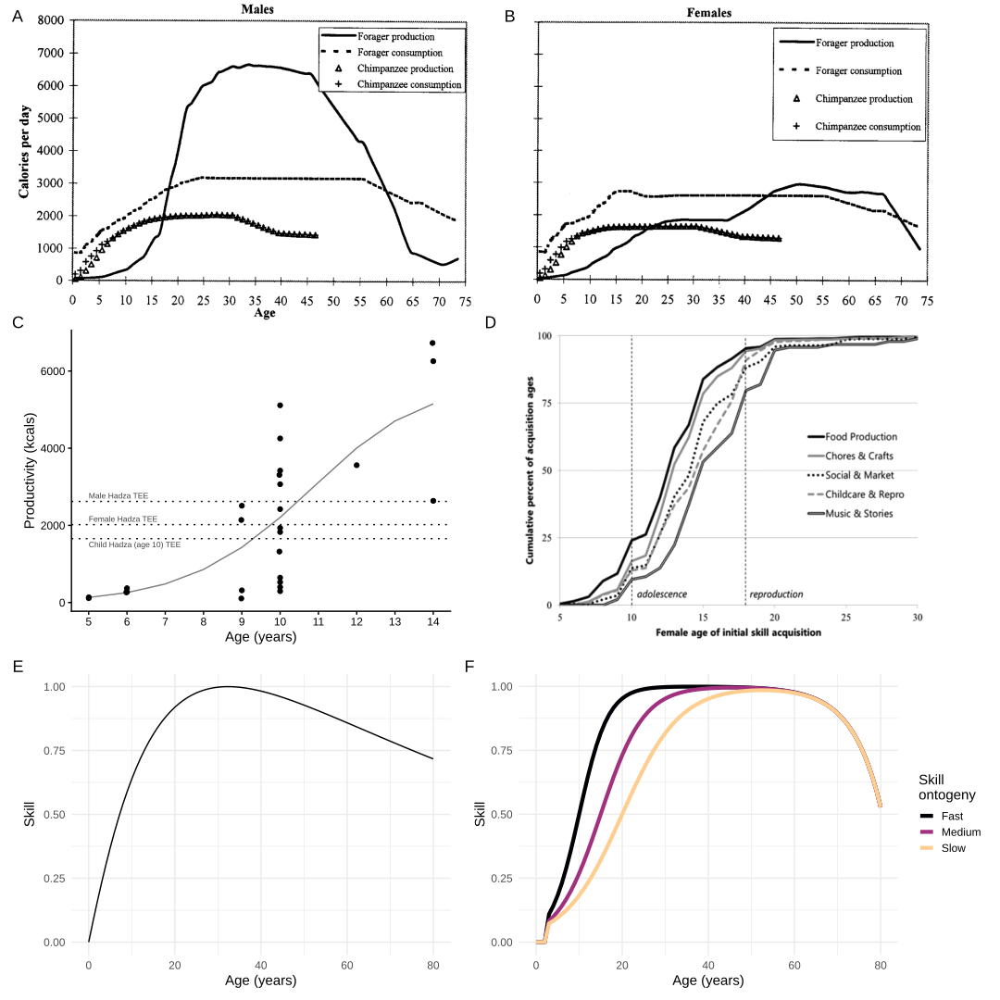
Simulating hunter-gatherer families
Age- and sex-specific survivorship (mortality)
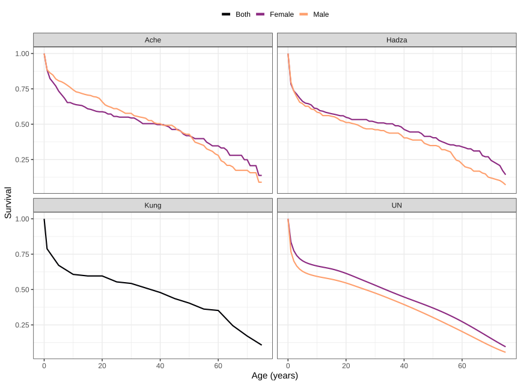
- \(e_{0,f} = 35\)
- \(e_{0,m} = 30\)
- Population is stationary with IBI ~ 4 (!Kung)
Hunter-gatherer family energy consumption
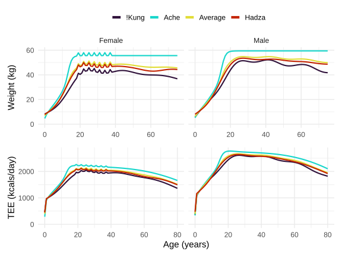
Total energy expenditure (TEE) from global samples using doubly labeled water (Pontzer et al. 2021; Bajunaid et al. 2025)
Hunter-gatherer energy production
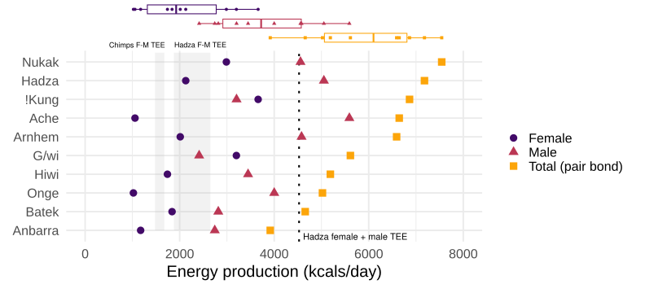
Kraft et al. (2021)
Parent joint energy production
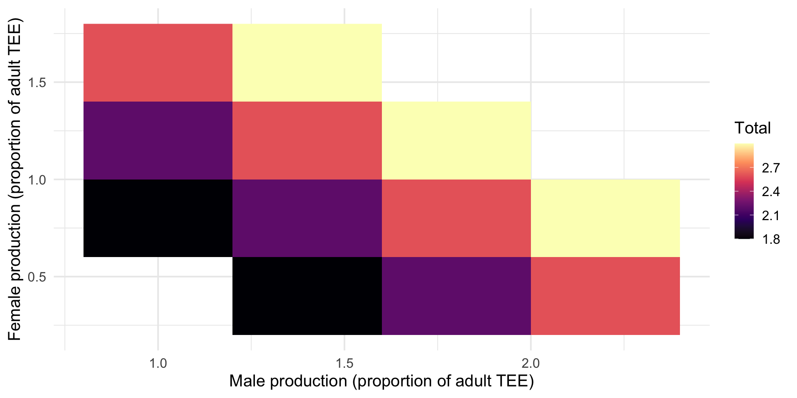
Hunting and gathering skill ontogeny
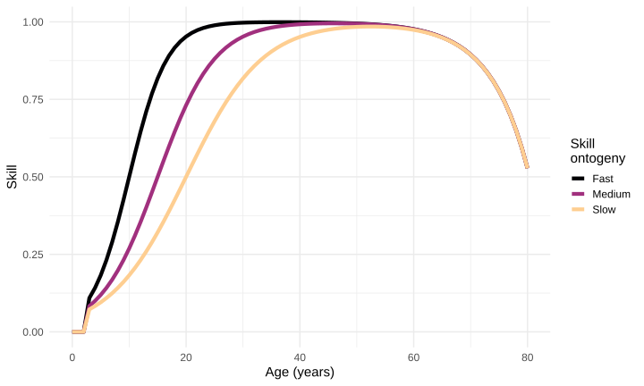
| Skill ontogeny | \(b_1\) | 50% | 95% |
|---|---|---|---|
| Fast | 0.40 | 10 | 17 |
| Medium | 0.25 | 15 | 27 |
| Slow | 0.15 | 20 | 40 |
Age at first birth (AFB), age at last birth (menopause), and interbirth interval (IBI)
Values averaged from the Ache, Agta, Hadza, Hiwi, and !Kung (Davison and Gurven 2021)
- Age at first birth (AFB): 20
- Interbirth interval (IBI): 3 and 4 years
- Age of last birth (ALB): 30, 38, 50, 60
- Maximum lifespan: 80 years
Simulations
Population model
- Energy consumption for each age & sex in a stationary population
- Energy production for each age & sex and 972 combinations of skill ontogeny parameters
- Population energy balance
Family model
- Starts at mother’s age at first birth
- Regular births with IBI = 3 or 4
- Energy consumption for each age & sex in family
- Energy production for each age & sex and combination of skill ontogeny parameters
- Offspring disperse at AFB
- Age of last birth varies from 30 to 60
- Family energy balance for each age of the mother for all 7776 parameter combinations
Results
Population model

Population model
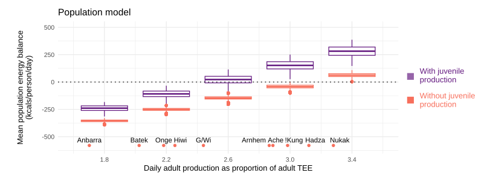
Family size
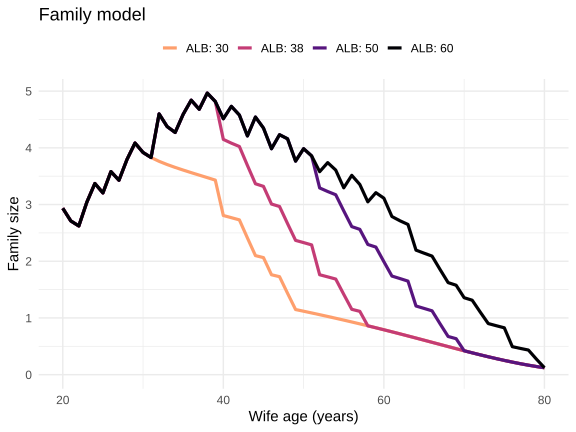
Family consumption and production
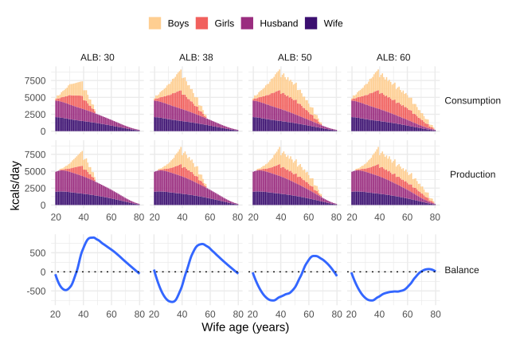
Averaged across the parameter space
Cumulative energy balance
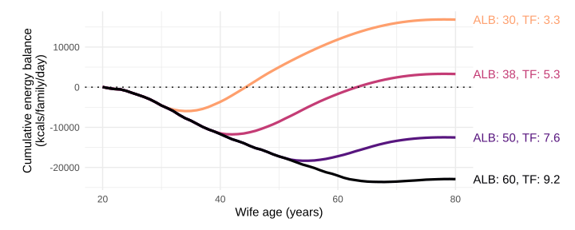
Averaged across the parameter space
Brideservice
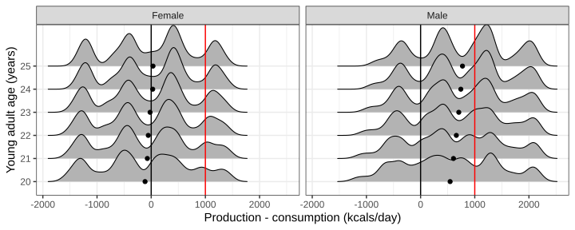
Concluding remarks
Relatively rapid reproduction of slow developing, energetically expensive offspring threatened to plunge families into energy deficit
Maturing offspring began to support themselves early on
Young couples without kids produced a surplus, perhaps subsidizing the wife’s younger siblings (bride service)
Older parents with few offspring produced a surplus, subsidizing their children’s families
Menopause limited family size to an energetically sustainable level
Results are generally consistent with ECM and the grandmother hypothesis
Byproduct theories of menopause
- artifacts of unusually benign environments (e.g., captivity, recent improvements in public health) that extend lifespan but not fertility
- epiphenomenon of antagonistic pleiotropy
- artifacts of selection for male longevity that extended female lifespan but not fertility
Adaptive theories of menopause
- grandmother hypothesis, in which the benefits of investing in grandchildren outweighed the fitness benefits of producing more children
- the mother hypothesis, in which the benefits of maintaining investment in multiple slow-developing offspring outweighed the increasing risk of maternal morbidity and mortality from continued reproduction
- the “aging eggs” hypothesis, in which increased risk of chromosomal abnormalities selected for a cessation of reproduction
- avoidance of breeding competition with genetic kin.
Hunter-gatherer energy production
\[ \mathrm{productivity}(age) = \mathrm{TEE}_{prop} \mathrm{strength}(age)^\alpha \mathrm{skill}(age)^{1 - \alpha} \tag{1}\]
\[ \mathrm{strength}(age, sex) = \frac{\mathrm{weight}(age, sex) (1 - e^{b_0 (age_{\mathrm{max}}-age)})}{\mathrm{weight}_{\mathrm{max}}} \tag{2}\]
\[ \mathrm{skill}(age) = \frac{1}{1 - e^{-b_1(age - age_{50})}} (1 - e^{b_0(age_{\mathrm{max}}-age)}) \tag{3}\]
The “absent father” hypothesis (Kuhle 2007)
- Humans reproduce in long-term marriages with a sexual division of labor
- Husbands sometimes abandon older wives for younger wives
- Male mortality is higher than female mortality, and husbands are often older, so more likely to die than wives
- Both of these could have left women without the resources to raise offspring
- Menopause would have limited the childrearing burden placed on older single mothers
Parent mortality
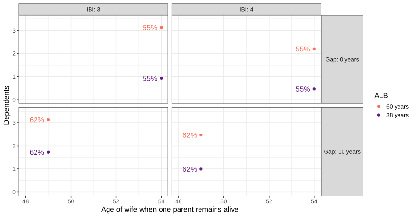
It’s parent absence, not father absence, that mattered